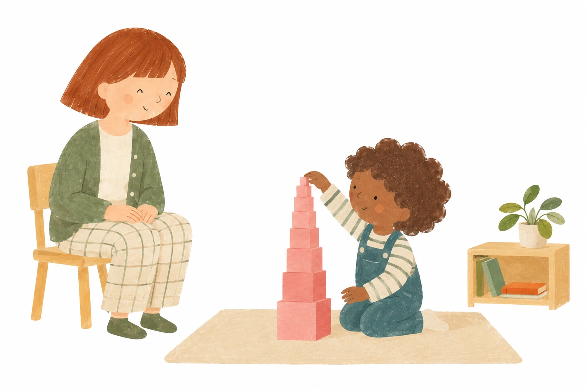

École Montessori éco-citoyenne · Nantes Nord · 3–12 ans
Grandir librement, aujourd’hui et pour demain
À l’école Montessori Les Petons dans l’Herbe, à Nantes Nord, chaque enfant avance à son rythme, développe son autonomie et nourrit sa curiosité dans un environnement pensé pour lui.
Une petite école. Deux ambiances. Une maison avec jardin.Et du temps pour grandir.
L’école accueille les enfants de 3 à 12 ans dans deux ambiances Montessori : 3–6 ans et 6–12 ans, au sein d’une maison entourée de 650 m² de jardin. Ici, les enfants ont le temps d’explorer, de manipuler, de comprendre et de prendre confiance, dans une pédagogie qui encourage la liberté tout en posant des repères clairs.
Nature, coopération, respect du vivant et éco-citoyenneté font pleinement partie du quotidien : apprendre à faire seul, mais aussi à grandir avec les autres et avec le monde qui nous entoure.
Du matériel Montessori bien au-delà des essentiels
Un choix exigeant, construit dans la durée : du matériel Montessori très complet, y compris des équipements peu courants, et un mobilier de qualité adapté aux enfants. Ces investissements importants leur offrent davantage de possibilités pour manipuler, expérimenter et approfondir.
Le vivant au quotidien
650 m² pour apprendre aussi dehors
Potager, compost, cuisine à patouille, espaces en copeaux… Le jardin se vit chaque jour, pour jouer, observer, cultiver et prendre soin du vivant.
École labellisée Eco-École depuis 2021
Un vrai lieu de vie
Une maison à hauteur d’enfant
Une salle de sieste au calme, des espaces cuisine indépendants et des sanitaires adaptés à l’autonomie : ici, les espaces sont pensés pour les besoins des enfants, tout au long de la journée.
Une place pour la musique
De la découverte des sons à l’émotion du concert
Clochettes Montessori, barres tonales, « Vendredi musique » chez les 3–6 ans… L’écoute et l’exploration musicale ont une vraie place dans les apprentissages. Chaque année, les 6–12 ans découvrent aussi les concerts de La Folle Journée de Nantes.
Les lieux, les équipements et la vie de l’école, en images.
Les classes
Deux ambiances, une continuité de 3 à 12 ans
✧
Les Chenilles
3–6 ans

« Je veux faire seul »
Une maison des enfants accueille les 3–6 ans. Dans un environnement préparé, chaque enfant évolue à son rythme avec des plages de travail longues (au moins 2 h 30). La manipulation du matériel lui permet d'intensifier son attention et de répéter l'activité, clé de la concentration et du développement intérieur.
À partir de 6 ans, l'enfant change d'échelle : il questionne, raisonne, cherche, coopère et construit progressivement sa pensée abstraite. Français, mathématiques, sciences, histoire, géographie et culture prennent vie à travers le matériel, les recherches, les grands récits, les projets et les sorties.
Observer avant d’intervenir, présenter le bon matériel au bon moment et laisser à l’enfant le temps d’essayer par lui-même : c’est au cœur de la posture Montessori.
L’erreur n’est pas sanctionnée : elle devient une information. L’enfant ajuste, recommence, persévère et construit peu à peu sa confiance avec ses compétences.
Des adultes formés, qui savent observer avant d’intervenir
L’éducateur suit les progrès de chaque enfant, propose les présentations adaptées à son niveau et l’accompagne progressivement vers davantage d’autonomie.
« Quelle valeur peut avoir la transmission de la connaissance, si la formation de l'homme est négligée ? »
Maria Montessori
Une école à Nantes Nord
✧
Un point de rencontre pour les familles d’ici et d’à côté.
Les Petons dans l’Herbe accueillent des enfants de Nantes et des communes voisines. Notre implantation à Nantes Nord rassemble des familles venues du nord et de l’est de l’agglomération.
Les familles de l’école viennent notamment de :
Carquefou
Orvault
Treillières
La Chapelle-sur-Erdre
Sucé-sur-Erdre
Sainte-Luce-sur-Loire
Saint-Mars-du-Désert
Nantes, dont Saint-Joseph de Porterie
Les Petons dans l’Herbe6 rue de la Petite Sensive · 44300 Nantes
Des moments de classe, des découvertes et la vie quotidienne de l’école, à retrouver dans nos dernières publications.
@lespetonsdanslherbeLes dernières publications de l’école s’affichent ici lorsque le contenu Instagram est autorisé.Voir les publications sur Instagram